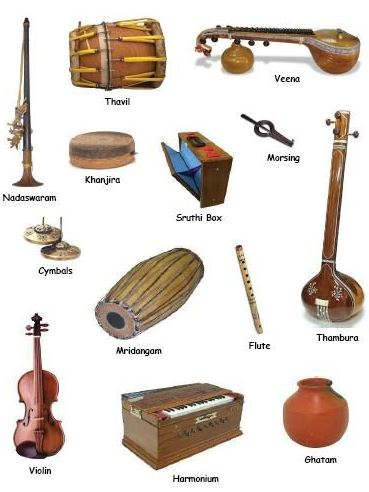

I started learning music when I was around 3 years old from my mom Smt.Uma Sivakumar. I performed in the Thyagaraja Aradhana which is run by SRUTI, an organization that promotes Indian Classical Music and Dance. My mom is one of the organizers. This was my very first public performance, and I still perform there every year. Apart from my performance, I also listen to the concerts of various other Vidwans that come to sing for SRUTI. Later, I was under the guidance of Smt. Rajeshwari Bhat from Houston, Texas. With her mentoring, I learnt more music and started performing concerts in India around the age of 9. This was just the beginning of my musical journey, and I knew that there was more to come. Below are a few links of videos with me singing at a younger age.
 Rasika sings Sa-Pa-Sa in different shruthis Rasika sings Esha pAhimAm at SRUTI Rasika plays mridhangam